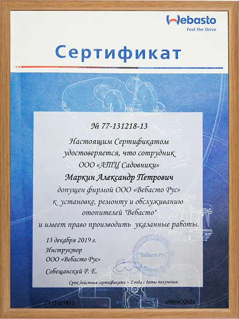

- Главная
- Услуги
- Ремонт климатической системы
- Ремонт автономных отопителей Webasto и Eberspacher
Ремонт автономных отопителей Webasto и Eberspacher
Записаться
Климат в нашей стране переменчив и отопление салона автомобиля требуется большую часть года. Отопитель просто обязан быть надежным, чтобы не подвести вас в длительном путешествии в холодное время.
Именно поэтому у автомобилистов так популярна установка автономных отопителей Webasto и Eberspacher, услуги по установке которой можно получить в нашем сервисе.
Хороший отопитель не только согреет, но и будет экономить горючее. Кроме того, надежные современные обогреватели продлевают срок работы машины, способствуют повышению безопасности вождения и увеличивают экологичность транспортного средства.
Мы установим автомобильные отопители на автомобили, Фольксваген обеспечим их обслуживание и при необходимости проведем ремонт. Наш техцентр предлагает установку отакбогревателей их известных брендов как Eberspacher и Webasto.
В отличие от обычных салонных печек они:
- экономно потребляют топливо
- имеют низкий расход электричества (не разрядят аккумулятор во время стоянки без водителя)
- мгновенно нагревают в салоне воздух
- имеют минимальный уровень шума
- предусматривают простое техобслуживание
К тому же, у этих аксессуаров есть собственная встроенная система диагностики, обеспечивающая безопасность их использования.
Какие варианты?
Собираясь установить автономный отопитель важно знать, что они делятся на:
- воздушные - для отопления применяется разогретый воздух
- жидкостные - отопителем служит тосол или антифриз в штатной охладительной системе
Кстати, что касается жидкостных моделей, то их еще называют предпусковыми подогревателями. Особенность последних состоит в том, что подогреватели, делая теплым воздух в салоне, еще и прогревают ваш двигатель, подготавливая его к запуску. Специалисты нашего центра всегда дадут грамотную консультацию по выбору нужной модели отопителя.
Дополнительный плюс
Возможность запуска отопителя не выходя из дома используя Ваш мобильный телефон, либо дистанционного пульта управления.
Подключение системы к штатному климат-контролю.
Установка автономных отопителей Eberspacher и Webasto на Volkswagen выгодна также, потому что они, присоединяясь к топливному баку или системе по электроснабжению, тем не менее работают независимо от двигателя.
Наш техцентр обеспечит монтаж, последующее ТО и необходимый ремонт вашего отопителя. Мы гарантируем не только индивидуальный подход, но и скидки нашим постоянным клиентам.
С нами салон вашего автомобиля всегда будет теплым и комфортным!
Стоимость услуг
| Работы по ремонту | Цена, руб. |
|---|---|
| Диагностика отопителя / подогревателя (без снятия с автомобиля) | По запросу |
| Ремонт блока управления | По запросу |
| Ремонт отопителя | По запросу |
| Ремонт электропроводки отопителя | По запросу |
| Снятие/установка жидкостных подогревателей | По запросу |
| Снятие/установка воздушных подогревателей | По запросу |
| Установка нового отопителя на автомобиль | По запросу |
Прямая связь со специалистом по телефону: +7 (964) 511-08-60
Допуск к работе с отопителями
Сотрудники нашей компании имеют сертификаты и допущены к установке, ремонту и обслуживанию всех видов отоппителей "Вебасто".

Ремонтируем автомобильный отопитель
Преимущества нашего автосервиса
Удобное расположение
Собственный склад запчастей
Выполняем работы в срок
Гарантия качества работ

Есть вопросы — спрашивайте!
Не стесняйтесь, Наши специалисты помогут Вам, окажут бесплатную консультацию или запишут на посещение Нашего автосервиса.
Смотрите также
Контакты
- г. Москва, 1-й Дорожный проезд, д. 5АЮАО Москвы. Ближайшее метро — «Южная»
- Ежедневно с 8:30 до 20:30Без выходных. Приём автомобилей — круглосуточно
- +7 (495) 260-06-02Эвакуатор: +7 (495) 796-29-99